The Yautja,(pronounced Ya-OOT-ja), known colloquially as the Predators or Hunters, are an extraterrestrial species characterized by their hunting of other dangerous species for sport and honor, including humans. The Yautja are a sentient, humanoid race that breathe an atmosphere similar to that of Earth's, but possess a level of technological advancement far in excess of anything available to humans. The Predators stalk and kill their prey using a combination of highly advanced technology, such as active camouflage and energy weapons, combined with comparatively primitive traditional weapons, such as blades, spears and nets. The Predators often ritualistically mutilate their prey and usually claim a trophy from their kills. Capable of interstellar travel in star ships, the Predators have hunted on Earth for centuries and have also had prior contact with the Engineers.
Aside from their repeated conflicts with humans, the Predators have notably been associated with Xenomorph XX121, known to them as kiande amedha ("hard meat"),whom they revere as perhaps the most worthy of all prey. They have been known to deliberately breed the creatures from captive Queens in order to hunt them, often as part of initiation rituals for young Predators.
Physiology
"You're one ugly motherfucker..."
―Dutch, to the Jungle Hunter (from
Predator)
Predators are bipedal humanoids, physically distinguishable from humans by their greater height, the long, hair-like appendages on their heads (nicknamed dreadlocks), their reptilian skin and their faces, which feature arthropod-like mandibles and no visible nose. The biological purpose of the distinctive mandibles is unclear – some have proposed they may be used in reproduction or mating rituals. They may also be a vestigial piece of anatomy, as noted by Lex Woods, who compares it to the human appendix. Yautja use them to convey emotions; for example, flared mandibles apparently signify anger or surprise, mandibles clicking together can signify interest or curiosity, and Yautja have even been said to "grin" with them. Predators have also been known to employ their mandibles as weapons, using them to inflict grievous bite wounds on their opponent. As well as the fleshy dreadlocks around the side of the head, some Predators have also been seen to possess sparse, quills on their cheeks and above the eyes.
Unmasked faces of Predators
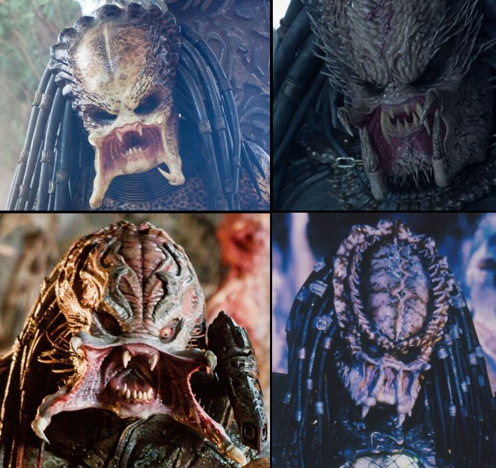
The unmasked faces of various Predators. Clockwise from top left: the Crucified Predator, the Ancient Predator, the City Hunter and the Berserker Super Predator.
While generally uniform, each Yautja's physical appearance includes a number of subtle variations, akin to human genetic diversity. Similarly, while Predator heights vary, they are typically over 7 feet tall, although some have been known to grow to 8 feet or even taller. Despite this, shorter individuals have been recorded, such as Mahnde or the aptly-named Shorty, who stood the height of a typical human. These individuals are unusual and their smaller height the subject of ridicule in Yautja society. The species' reptile-like skin can range in color from light to dark, be mottled or clear, and can appear dry or moist and clammy.
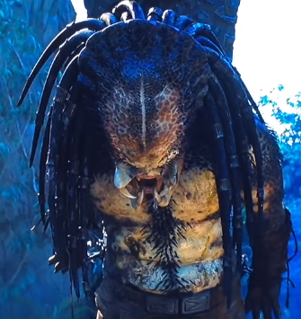
The Classic Predator and its chest quills.
Class, Reproduction and Life Cycle
Sources on what species class Yautja's are the most adjacent to vary, however many note that they have reptilian characteristics that may be more than superficial. Along with scaley skin, their armor features a wire mesh designed to keep the wearer warm; it is noted to be very uncomfortable for humans, even at the lowest setting. However, some Yautja do not have this mesh and it may not be that Yautja's are reptilian, per se, but rather that they are simulating the environment of their homeworlds which are said to be arid.
Yautja are a dual-sexed species, though most encounters with humans have been with male individuals. The species has a breeding season, in which female Yautjas will choose the most skillful males to sire their offspring. Presumably, males return to their homeworlds for this event as females do not go off-world as much as males or for the same reasons. Young Yautja, called Sucklings, are born to females after an unknown amount of time. Females are shown to have mammary glands and Dachande was able to recognize them for what they were in humans, which would suggest Yautja are somewhat mammalian in addition to having repitilian traits. Young Yautja appear to be born live; there has been no evidence that they are hatched from any kind of egg.
It is not clear which of the two sexes brings up the offspring, and it may even be possible that neither parent raises their children when they are very young. According to Dachande's accounts, Yautja seem to have a "village-raising" approach to parenthood. He and his half-sibling had different mothers, yet were in constant company and very close, which is uncommon for half-siblings with different sires. For Yautja with common bloodlines, this could be the case throughout their upbringing, however males who have esteemed bloodlines are much more involved with how their offspring are developing. A Yautja is said to reach physical adulthood at about 50-60 years of age, which is the age equivalent of an 18-19 year old human. However, until they are Blooded, their clan still considers them unable to hunt without supervision and limits their privledges within the clan.
Yautjas can live to be thousands of years old and are one of the longer lived species recorded. The only species known to live longer are the Drukathi and certain strains of Xenomorph, such as the Queen.
Physical abilities
"I know one thing, Major – I drew down and fired straight at it. Caped off 200 rounds and the
minigun, full pack. Nothin'... Nothin' on this Earth could've lived... Not at that range."
―Mac to Dutch, regarding the Jungle Hunter's endurance (from Predator)
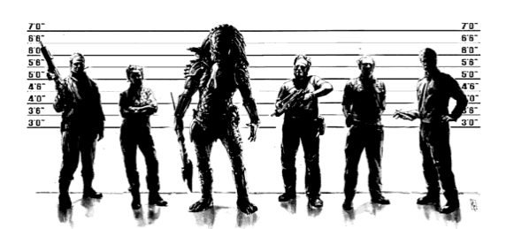
Yautja are highly resilient to physical damage, capable of recovering from multiple gunshot wounds with minimal or even no medical attention and surviving radiation doses which would be fatal to humans. They are also highly resilient to most bacteria and viruses. They are incredibly strong, easily capable of outmatching a conditioned adult human male in unarmed combat and able to land blows that can shatter solid concrete. They are capable of tearing a human's head and spine from the body with little effort, while some larger specimens have even been seen to tear a human body in half using only their bare hands.
This strength evidently extends to their lower bodies as well, as Predators have been seen to jump up to three times their own height, and are capable of falling up to ten times their height and landing safely on their feet. They are skilled climbers, and in fact appear to prefer moving at height through trees or across rooftops in pursuit of prey, typically jumping from one vantage point to the next. Though capable of surviving exposure in Antarctic temperatures for an extended period of time, it seems as though Predators have a preference for hot equatorial climates.
According to Isabella Borgia, Yautja possess "superior genetic material" compared to humans that, if used correctly, could enhance humanity as a species. The augmentation of Hunter Borgia was one such project carried out in this regard, although the genetic experimentation was not completed before Hunter was slain by the Yautja known as Scarface. Nevertheless, Yautja genes are evidently "potent" enough that, when one is impregnated with a Xenomorph Chestburster, the resulting creature adopts more pronounced physical characteristics from its host than might otherwise be expected – such as dreadlocks and mandibles – leading to the distinctive Predalien caste.
Their blood is luminescent phosphor green in color, and has the capacity to partially neutralize the acidity of Xenomorph blood. It has also been known to bestow significant life-giving properties on humans, capable of extending a person's lifespan well beyond what would normally be possible. It is thought Yautja may be cold-blooded, hence their documented affinity for hot, humid conditions and the thermal netting built into their suits.
Predators' vision operates mainly in the infrared portion of the electromagnetic spectrum; they can easily detect heat differentials in their surroundings, but are unable to easily distinguish among objects of the same relative temperature; this is debatable, however, as the City Hunter can still easily distinguish objects from one another after Harrigan removes his mask. A Predator's helmet or bio-helmet greatly increases its ability to see in a variety of spectrums, ranging from the low infrared to the high ultraviolet, and also filters ambient heat from the area, allowing them to distinguish prey with greater clarity and detail. While they are seemingly capable of breathing Earth's atmosphere, they have been known to use some form of breathing apparatus in the event of losing their bio-helmet.
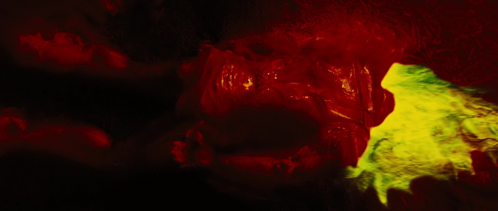
A Yautja's natural vision.
Diet
"Didn't think he was a vegetarian..."
―Harrigan, regarding City Hunter (from Predator 2)
Predators' dietary habits are not clearly established, although the City Hunter that stalked Los Angeles was known to visit a slaughterhouse in the city every two days to feed on the meat stored there, suggesting a carnivorous or perhaps omnivorous diet. Another Predator was seen skinning and eating muskrats, and another one was observed eating the roots of an Earth plant. It was speculated that he was guided to the root either through instinct or scent. In one instance, a contamination, caused by Chemical A0-3959X.91 – 15, drove a mutated Predator to cannibalize one of the last surviving members of its own hunting squad.
While the maximum or typical lifespan of a Predator is not known, it is accepted as being well in excess of human lifespans, and it has been implied that Predator Elders can live for hundreds to thousands of years. One predator, called Kalakta, is said to be thousands of years old. He comments that human life "hurries as if eager" to its end, in comparison to a Yautja's lifespan.
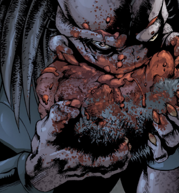
Speech, language and communication
Predators possess their own language, both in spoken and written form, the former of which resembles a series of clicks, roars, snarls and growls. They also have dialects, which deviate sharply enough from the Yautja common tongue that translators cannot make heads or tails of it.The written language is expressed in a pattern of dashes not dissimilar in form and function to many Earth-based languages. These written symbols appear on the creatures' gauntlet displays, helmets, architecture and many other surfaces. Predators regularly imitate human speech that they overhear. It is unclear to what degree the Yautja can comprehend this speech, although the creatures at least seem to hold some understanding of the language as they have been known to repeat phrases at vaguely appropriate times as a form of communication with prey. Older Predators with more experience among humans have on occasion been known to actually learn to speak English, at least to a limited extent.
It has been known for humans and Yautja to successfully communicate using sign language.
There is evidence that Yautja understand the concept of humor. For example, during events on Bouvet Island, the Predator Scar deliberately caused a deceased Xenomorph to shoot out its inner jaw and startle Lex, and her shock and fear apparently gave Scar some amusement. According to Machiko Noguchi, laughter is universal – even in their species – and the Predator equivalent of a belly laugh is the rapid clicking of tusks.
Additionally, as demonstrated by the Jungle and City Hunters, while individual Yautjas make different sounds, a very common sound emitted by them is a high pitched, human-like shriek (mainly while using their MediKits to dress their wounds).
When given a compliment from a higher authority, similarly ranked Yautja will touch the hair of the complimentee in acknowledgement.
Technology
"Funny, those things are way past us technologically - their ships make the space shuttle look like a
matchbox toy, and yet they get off hunting and killing. I wonder why?
Maybe they're just like us. Technology removes us from our true selves - takes us away from the
beast inside. Maybe the hunt is their way of keeping the beast alive."
―Detectives Rosche and John Schaefer (from Predator: Concrete Jungle)
Yautja technology is distinctive in many respects, not least of which is its unusual combination of ornate, tribal appearance masking deadly, sophisticated weaponry. However, despite the species' obvious technological prowess, including access to adaptive camouflage and plasma weaponry, traditional, ancient weapons, such as blades, knives and spears, are still employed widely (and apparently considered by the Yautja as being more "honorable" than advanced technology).
At least one Yautja weapon uses a metal that does not correspond to any known element on the periodic table, and many devices have been shown to be completely resistant to the effects of the acidic blood of Xenomorphs, an otherwise incredibly corrosive and destructive substance. With this said however, the Wristblades and chest armor of immature Young Blood Yautja are still made of metal that is not resistant to Xenomorph blood; it seems such advanced armor must be "earned" through initiation rituals that first test the individual's prowess with more rudimentary and challenging equipment. Many of the Yautja's tools make use of thermal imaging to track prey, while some aspects of their technology have been in use for millennia. Individuals of the species will often utilize their own bespoke variations of tried and tested Yautja weapons, constructed from different materials and with varying degrees of tribal or symbolic ornamentation.
Culture and History
Hunting culture
"They like the heat dammit, the sport. Leave 'em be in two, three, they'll be gone. Mess with them,
and god only knows what might happen."
―General Phillips regarding the Predators
Yautja culture centers on the ritualistic hunting of other dangerous lifeforms, and this practice appears to be the foundation of their very society. Predators will travel huge distances – even across entire galaxies – in order to face opponents they consider a worthy challenge, and may also kidnap and transport prey across similar distances to bring such victims to a hunting ground of their choice.
Defeat in a Hunt is apparently a cause of great shame to the Yautja, and often leads to the individual committing honorable suicide, typically through the detonation of their Wrist Gauntlet's Self-Destruct Device. Upon their death, a hunting Yautja's spacecraft will return to the species homeworld on automatic pilot so that a record of the individual's Hunt, recorded through their bio-helmet, may be returned to its kin.
The Yautja have a Code of Honor during the hunt that it expects all members of the species to adhere to on pain of not being seen as a "true Yautja" and therefore subject to being destroyed. Therefore, most Yautja are moulded around that code, being ruthless but honorable, with the exception of Bad Bloods. Aggression and arrogance seems to be innate in Hunters, especially young males.
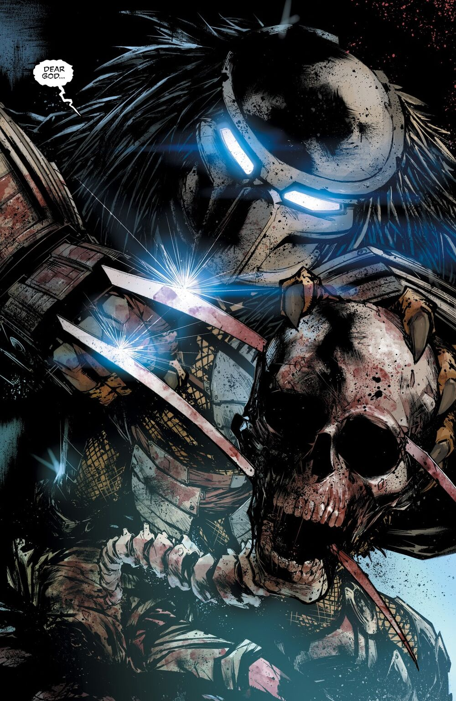
Names
The Yautja society appears to be a heavily gendered one; even the names of the Predators tend to have masculine and feminine connotations, similar to many romantic language such as spanish. Male names often end with 'e' (i.e: Dachande, Tichinde, Skemte, Nakande, ect.) while female names tend to end with 'i' (i.e: Vagouti, Hashori). Dachande even nicknames Machiko Noguchi "Da'dtou-di", which is the feminine form of that name.
Some names, such as Lar'nix'va, Bakuub, and Warkha do not fit into this naming trend however. This could be because the names are unisex or that different clans have different naming conventions.
Society and Population
Yautja society operates a class or ranking system, nominally based on an individual's hunting experience and prowess. Their titles include:
- Un-Blooded: The un-refined hunters of the future, Unblooded Yautja are young
predators who
haven't completed basic training. They are, or are close to, physically mature adults. Most
Unblooded, and therefore subsequent classes, are male but female hunters do exist, implying a
minority of them within the hunting body.
- 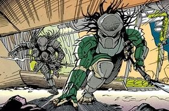
- Young Blood: Young adults Yautja who yet to be seen as "adults"
and "true hunters"
in the eyes
of the clanmates. These hunters are refined enough to overpower a skilled human fighter, however
their skill against a Xenomorph varies. Once they kill one, Yautja mark themselves with
Xenomorph blood, completing their initiation into Adulthood.
- 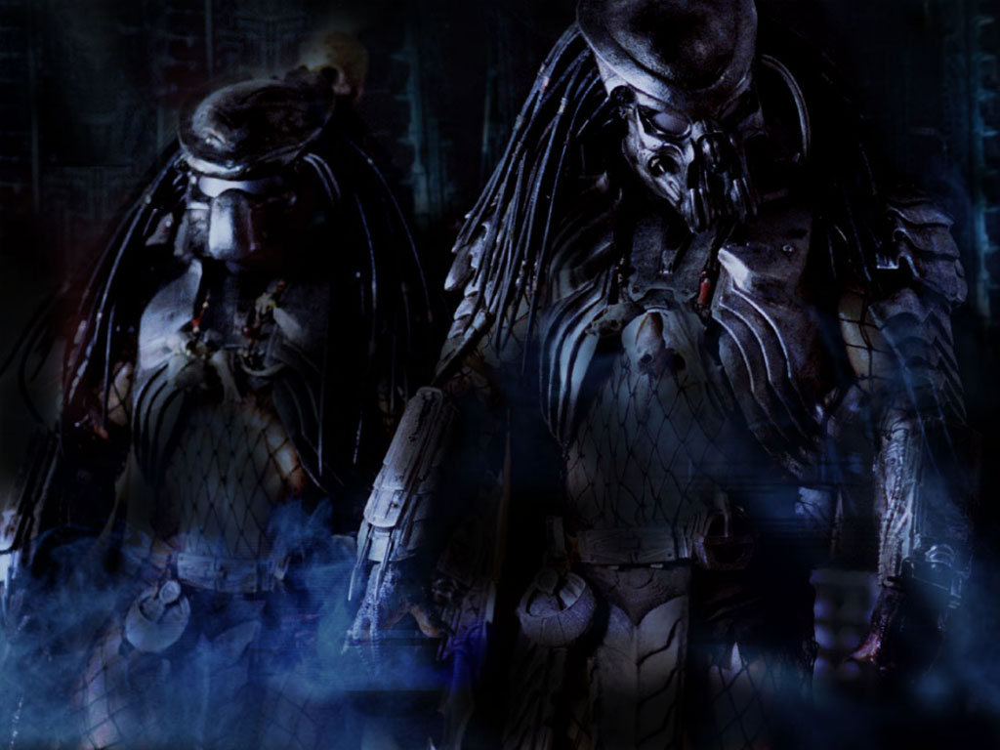
- Blooded: These Yautja have successfully killed their first Xenomorph and given it
is such a
broad title, skills vary. Once a Yautja is blooded, females will begin to pay him mind for
breeding purposes and his rank could deviate into more specific ones.
- 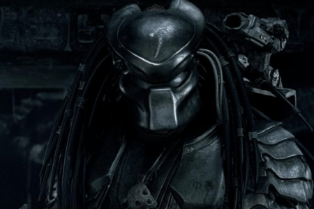
- Elite: Elites encompass the more dangerous of the Yautja race. They have the skill
to take on
several Xenomorph at once, including large, dangerous castes such as Praetorians, Predaliens and
even Queens. Elites seem to take on some of the more nuanced, lengthy, and taxing problems and
missions in the Yautja world. These can be assigned, as in the case of Dark, or
self-volunteered, as in the cast of Wolf.
- 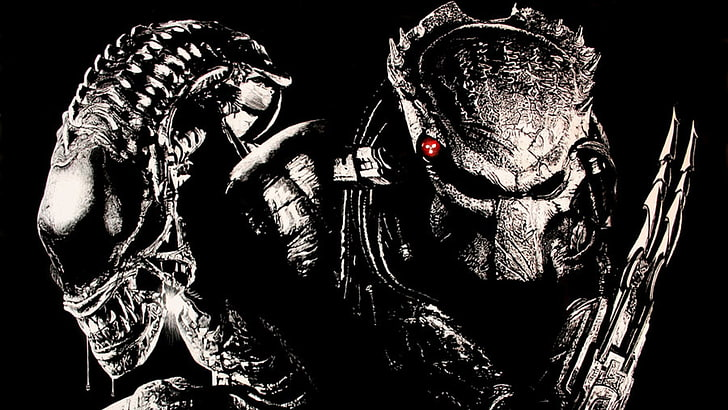
- Leader: A Leader is a Yautja who has been selected or volunteers to lead and teach
Un-Blooded
hunters. They appear to be a specialized version of the Elite rank.
- 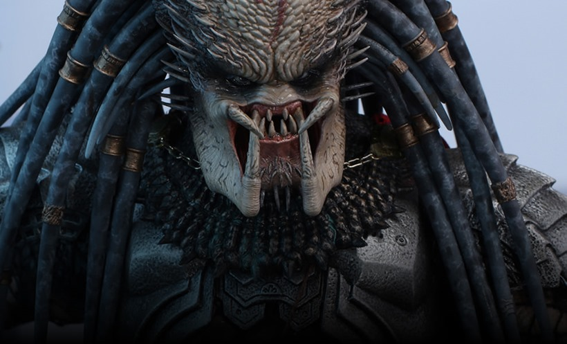